<!DOCTYPE html>


<html lang="en">
  

    <head>
      <meta charset="utf-8" />
        
      <meta
        name="viewport"
        content="width=device-width, initial-scale=1, maximum-scale=1"
      />
      <title>Win10系统下Lua及Luacheck环境配置 |  半个出家人</title>
  <meta name="generator" content="hexo-theme-ayer">
      
      <link rel="shortcut icon" href="/img/circle_image.png" />
       
<link rel="stylesheet" href="/dist/main.css">

      
<link rel="stylesheet" href="/css/fonts/remixicon.css">

      
<link rel="stylesheet" href="/css/custom.css">
 
      <script src="https://cdn.staticfile.org/pace/1.2.4/pace.min.js"></script>
       
 

      <link
        rel="stylesheet"
        href="https://cdn.jsdelivr.net/npm/@sweetalert2/theme-bulma@5.0.1/bulma.min.css"
      />
      <script src="https://cdn.jsdelivr.net/npm/sweetalert2@11.0.19/dist/sweetalert2.min.js"></script>

      <!-- mermaid -->
      
      <style>
        .swal2-styled.swal2-confirm {
          font-size: 1.6rem;
        }
      </style>
    <link rel="alternate" href="/atom.xml" title="半个出家人" type="application/atom+xml">
</head>
  </html>
</html>


<body>
  <div id="app">
    
      
    <main class="content on">
      <section class="outer">
  <article
  id="post-TestSubFolder-Lua-installation-of-luacheck"
  class="article article-type-post"
  itemscope
  itemprop="blogPost"
  data-scroll-reveal
>
  <div class="article-inner">
    
    <header class="article-header">
       
<h1 class="article-title sea-center" style="border-left:0" itemprop="name">
  Win10系统下Lua及Luacheck环境配置
</h1>
 

      
    </header>
     
    <div class="article-meta">
      <a href="/2020/10/03/TestSubFolder-Lua-installation-of-luacheck/" class="article-date">
  <time datetime="2020-10-02T16:23:46.000Z" itemprop="datePublished">2020-10-03</time>
</a> 
  <div class="article-category">
    <a class="article-category-link" href="/categories/Lua/">Lua</a>
  </div>
  
<div class="word_count">
    <span class="post-time">
        <span class="post-meta-item-icon">
            <i class="ri-quill-pen-line"></i>
            <span class="post-meta-item-text"> Word count:</span>
            <span class="post-count">872</span>
        </span>
    </span>

    <span class="post-time">
        &nbsp; | &nbsp;
        <span class="post-meta-item-icon">
            <i class="ri-book-open-line"></i>
            <span class="post-meta-item-text"> Reading time≈</span>
            <span class="post-count">3 min</span>
        </span>
    </span>
</div>
 
    </div>
      
    <div class="tocbot"></div>


  
    <div class="article-entry" itemprop="articleBody">
       
  <blockquote>
<p><strong>说明: 本文描述了windows系统上从Lua环境安装配置到使用luarocks安装luacheck的详细步骤。笔者参考网上的博客进行配置时踩了不少坑，最终整理出一套尽可能简洁且可行的步骤，希望帮到各位伙伴</strong><br><strong>另，笔者后来发现Luacheck在windows上的安装有更简洁的方法，一步即可，甚至不需要配置lua环境，详见文末。</strong></p>
</blockquote>
<h1 id="环境说明"><a href="#环境说明" class="headerlink" title="环境说明"></a>环境说明</h1><ul>
<li>Windows 10 专业版</li>
<li>Visual Studio 2017 community</li>
<li>Lua for Windows v5.1.5-52 Released</li>
<li>Luarocks 2.2.2<h1 id="步骤"><a href="#步骤" class="headerlink" title="步骤"></a>步骤</h1><h2 id="1-安装配置Lua环境"><a href="#1-安装配置Lua环境" class="headerlink" title="1. 安装配置Lua环境"></a>1. 安装配置Lua环境</h2>(1) Lua for Windows下载地址：<a href="https://github.com/rjpcomputing/luaforwindows/releases" target="_blank" rel="noopener">https://github.com/rjpcomputing/luaforwindows/releases</a><br>(2) 直接下载<code>LuaForWindows_v5.1.5-52.exe</code>,双击安装(路径等设置按照默认即可)</li>
</ul>
<p>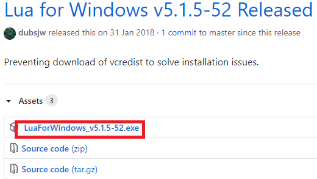</p>
<hr>
<p>(3) 安装好后，环境变量会自动配置好，命令行输入lua，显示结果如下，则配置成功<br>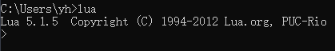</p>
<hr>
<h2 id="2-安装并升级luarocks"><a href="#2-安装并升级luarocks" class="headerlink" title="2. 安装并升级luarocks"></a>2. 安装并升级luarocks</h2><p>(1) 在下载Lua for windows的网页中往下拉，可以看到LuaRocks updater，分别下载红框中的两个文件，得到<code>luarocks-2.2.2-win32.zip</code>和<code>lfw_luarocks-2.2.2-win32.7z</code><br>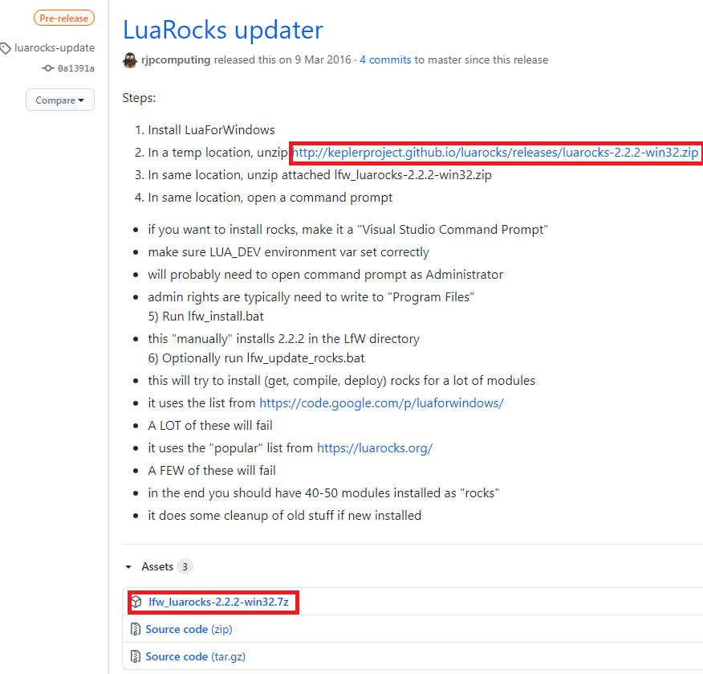</p>
<hr>
<p>(2) 分别解压两个压缩文件，并将<code>lfw_luarocks-2.2.2-win32</code>中的文件全部拷贝到<code>luarocks-2.2.2-win32</code>中，如下图<br>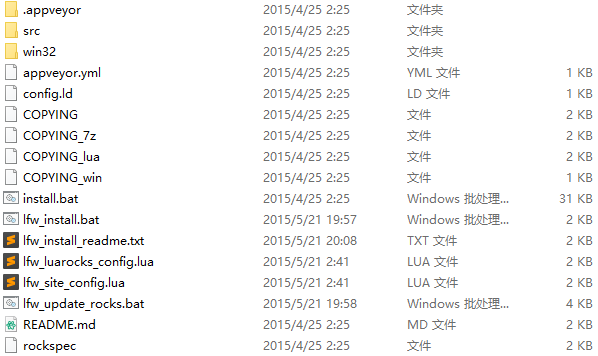</p>
<hr>
<p>(3) 将文件夹<code>luarocks-2.2.2-win32</code>移动到lua目录下。(若按照本文步骤1安装lua，则目录为C:\Program Files (x86)\Lua)<br>(4) 使用管理员身份运行windows命令提示符（方法：在Windows10系统的搜索框中直接输入命令CMD，在命令提示符上单击右键，选择管理员身份运行）<br>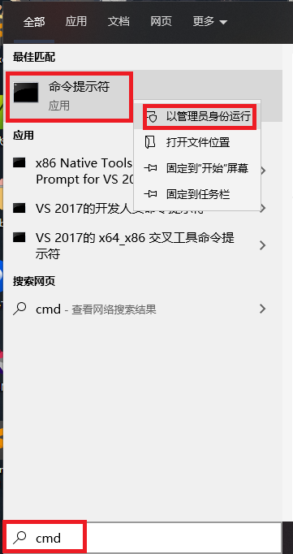</p>
<hr>
<p>(5) 进入luarocks目录<br><figure class="highlight dos"><table><tr><td class="gutter"><pre><span class="line">1</span><br></pre></td><td class="code"><pre><span class="line"><span class="built_in">cd</span> C:\Program Files (x86)\Lua\luarocks-<span class="number">2</span>.<span class="number">2</span>.<span class="number">2</span>-win32</span><br></pre></td></tr></table></figure></p>
<hr>
<p>(6) 执行<code>install.bat</code>， 显示以下内容表明安装成功<br>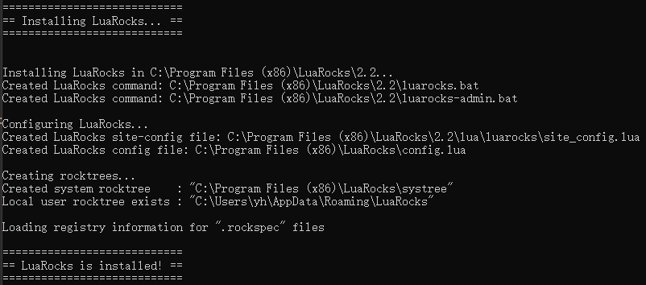</p>
<hr>
<p>(7) 执行<code>lfw_install.bat</code>。（若非管理员身份运行cmd，本步骤会出错）<br>此时，输入luarocks，可看到版本信息为2.2.2，</p>
<hr>
<h2 id="3-使用luarocks安装luacheck"><a href="#3-使用luarocks安装luacheck" class="headerlink" title="3. 使用luarocks安装luacheck"></a>3. 使用luarocks安装luacheck</h2><blockquote>
<p><strong>Note:</strong> luacheck的安装涉及到一些依赖，需要先安装一些其他的模块，包括：argparse, lanes, luafilesystem。（luacheck对所依赖的模块的版本也有一些要求）。</p>
</blockquote>
<p>(1) 继续在命令提示符中输入<code>luarocks install argparse</code>示如下信息，表明安装成功。<br>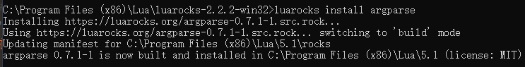</p>
<hr>
<p>(2) 紧接着 <code>luarocks install luafilesystem</code>（在此之前，其实已经有安装好的luafilesystem模块，因其版本过低，需要重新安装）。<br>此处在编译时报错，信息如下：<br>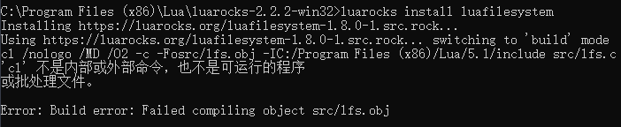<br>这是因为缺乏VC++编译的环境。根据luarocks的readme文档中的说明：</p>
<blockquote>
<p>if you want to install rocks, make it a “Visual Studio Command Prompt”</p>
</blockquote>
<p>我们需要在Visual Studio Command Prompt下使用luarocks进行相应模块的安装。<br>使用搜索功能搜索相应的快捷方式：<strong>VS 2017的开发人员命令提示符</strong> 或者<strong>Command Prompt for VS 2017</strong>，笔者计算机中其所在位置如下：<br>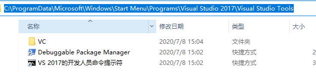<br>同样右键，以管理员方式运行，执行命令<code>luarocks install luafilesystem</code>，则可安装成功。<br>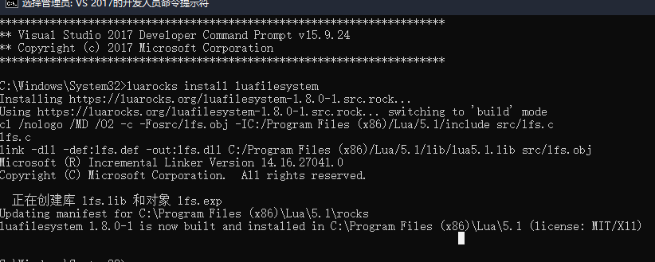</p>
<hr>
<p>(3) 直接安装luacheck：<code>luarocks install luacheck</code>，此时，luacheck安装成功<br>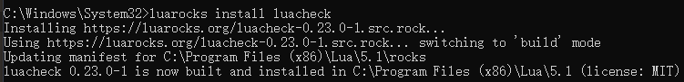</p>
<hr>
<h2 id="4-使用测试"><a href="#4-使用测试" class="headerlink" title="4. 使用测试"></a>4. 使用测试</h2><p>将任意lua文件放置在任意位置，使用cmd进入相应目录，输入命令<code>luacheck XXX.lua</code>，即可使用luacheck对lua文件进行检测。<br>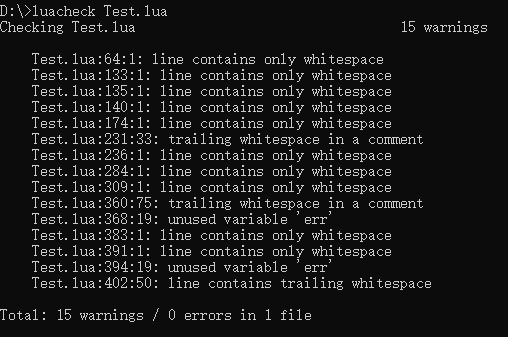</p>
<h1 id="最简单的Luacheck配置方法-只需一步"><a href="#最简单的Luacheck配置方法-只需一步" class="headerlink" title="最简单的Luacheck配置方法(只需一步)"></a>最简单的Luacheck配置方法(只需一步)</h1><p>Luacheck的<a href="https://github.com/mpeterv/luacheck" target="_blank" rel="noopener">开源库</a>上提供了Windows 二进制Luacheck.exe文件的<a href="https://github.com/mpeterv/luacheck/releases/download/0.23.0/luacheck.exe" target="_blank" rel="noopener">下载链接</a>，该可执行文件将Luacheck所依赖的Lua，LuaFileSystem，Lualanes程序绑定在一起。因此，直接用命令行调用Luacheck.exe即可使用，甚至不需要配置Lua环境。</p>
<hr>
<h1 id="Ref"><a href="#Ref" class="headerlink" title="Ref"></a>Ref</h1><p> <a href="https://blog.csdn.net/Stupid_kidofObj/article/details/105043561" target="_blank" rel="noopener">https://blog.csdn.net/Stupid_kidofObj/article/details/105043561</a><br> <a href="https://github.com/mpeterv/luacheck" target="_blank" rel="noopener">https://github.com/mpeterv/luacheck</a></p>
 
      <!-- reward -->
      
      <div id="reword-out">
        <div id="reward-btn">
          Donate
        </div>
      </div>
      
    </div>
    

    <!-- copyright -->
    
    <div class="declare">
      <ul class="post-copyright">
        <li>
          <i class="ri-copyright-line"></i>
          <strong>Copyright： </strong>
          
          Copyright is owned by the author. For commercial reprints, please contact the author for authorization. For non-commercial reprints, please indicate the source.
          
        </li>
      </ul>
    </div>
    
    <footer class="article-footer">
       
<div class="share-btn">
      <span class="share-sns share-outer">
        <i class="ri-share-forward-line"></i>
        分享
      </span>
      <div class="share-wrap">
        <i class="arrow"></i>
        <div class="share-icons">
          
          <a class="weibo share-sns" href="javascript:;" data-type="weibo">
            <i class="ri-weibo-fill"></i>
          </a>
          <a class="weixin share-sns wxFab" href="javascript:;" data-type="weixin">
            <i class="ri-wechat-fill"></i>
          </a>
          <a class="qq share-sns" href="javascript:;" data-type="qq">
            <i class="ri-qq-fill"></i>
          </a>
          <a class="douban share-sns" href="javascript:;" data-type="douban">
            <i class="ri-douban-line"></i>
          </a>
          <!-- <a class="qzone share-sns" href="javascript:;" data-type="qzone">
            <i class="icon icon-qzone"></i>
          </a> -->
          
          <a class="facebook share-sns" href="javascript:;" data-type="facebook">
            <i class="ri-facebook-circle-fill"></i>
          </a>
          <a class="twitter share-sns" href="javascript:;" data-type="twitter">
            <i class="ri-twitter-fill"></i>
          </a>
          <a class="google share-sns" href="javascript:;" data-type="google">
            <i class="ri-google-fill"></i>
          </a>
        </div>
      </div>
</div>

<div class="wx-share-modal">
    <a class="modal-close" href="javascript:;"><i class="ri-close-circle-line"></i></a>
    <p>扫一扫，分享到微信</p>
    <div class="wx-qrcode">
      
    </div>
</div>

<div id="share-mask"></div>  
  <ul class="article-tag-list" itemprop="keywords"><li class="article-tag-list-item"><a class="article-tag-list-link" href="/tags/Lua/" rel="tag">Lua</a></li></ul>

    </footer>
  </div>

   
  <nav class="article-nav">
    
      <a href="/2020/10/25/TestSubFolder-OS-Shell-on-UNIX-like-systems/" class="article-nav-link">
        <strong class="article-nav-caption">上一篇</strong>
        <div class="article-nav-title">
          
            【OS】Shell on UNIX-like systems
          
        </div>
      </a>
    
    
      <a href="/2020/09/14/CG-gamma-correction-in-unity/" class="article-nav-link">
        <strong class="article-nav-caption">下一篇</strong>
        <div class="article-nav-title">【渲染】理解伽马校正(Gamma Correction)与Unity的Gamma or Linear workflow</div>
      </a>
    
  </nav>

  
   
    
    <script src="https://cdn.staticfile.org/twikoo/1.4.18/twikoo.all.min.js"></script>
    <div id="twikoo" class="twikoo"></div>
    <script>
        twikoo.init({
            envId: ""
        })
    </script>
 
</article>

</section>
      <footer class="footer">
  <div class="outer">
    <ul>
      <li>
        Copyrights &copy;
        2015-2023
        <i class="ri-heart-fill heart_icon"></i> Prin
      </li>
    </ul>
    <ul>
      <li>
        
      </li>
    </ul>
    <ul>
      <li>
        
        
        <span>
  <span><i class="ri-user-3-fill"></i>Visitors:<span id="busuanzi_value_site_uv"></span></span>
  <span class="division">|</span>
  <span><i class="ri-eye-fill"></i>Views:<span id="busuanzi_value_page_pv"></span></span>
</span>
        
      </li>
    </ul>
    <ul>
      
    </ul>
    <ul>
      
    </ul>
    <ul>
      <li>
        <!-- cnzz统计 -->
        
        <script type="text/javascript" src='https://s9.cnzz.com/z_stat.php?id=1278069914&amp;web_id=1278069914'></script>
        
      </li>
    </ul>
  </div>
</footer>    
    </main>
    <div class="float_btns">
      <div class="totop" id="totop">
  <i class="ri-arrow-up-line"></i>
</div>

<div class="todark" id="todark">
  <i class="ri-moon-line"></i>
</div>

    </div>
    <aside class="sidebar on">
      <button class="navbar-toggle"></button>
<nav class="navbar">
  
  <div class="logo">
    <a href="/"></a>
  </div>
  
  <ul class="nav nav-main">
    
    <li class="nav-item">
      <a class="nav-item-link" href="/">主页</a>
    </li>
    
    <li class="nav-item">
      <a class="nav-item-link" href="/archives">归档</a>
    </li>
    
    <li class="nav-item">
      <a class="nav-item-link" href="/categories">分类</a>
    </li>
    
    <li class="nav-item">
      <a class="nav-item-link" href="/tags">标签</a>
    </li>
    
    <li class="nav-item">
      <a class="nav-item-link" href="/friends">友链</a>
    </li>
    
    <li class="nav-item">
      <a class="nav-item-link" href="/about">关于我</a>
    </li>
    
    <li class="nav-item">
      <a class="nav-item-link" href="/categories/Unreal">虚幻引擎</a>
    </li>
    
  </ul>
</nav>
<nav class="navbar navbar-bottom">
  <ul class="nav">
    <li class="nav-item">
      
      <a class="nav-item-link nav-item-search"  title="Search">
        <i class="ri-search-line"></i>
      </a>
      
      
      <a class="nav-item-link" target="_blank" href="/atom.xml" title="RSS Feed">
        <i class="ri-rss-line"></i>
      </a>
      
    </li>
  </ul>
</nav>
<div class="search-form-wrap">
  <div class="local-search local-search-plugin">
  <input type="search" id="local-search-input" class="local-search-input" placeholder="Search...">
  <div id="local-search-result" class="local-search-result"></div>
</div>
</div>
    </aside>
    <div id="mask"></div>

<!-- #reward -->
<div id="reward">
  <span class="close"><i class="ri-close-line"></i></span>
  <p class="reward-p"><i class="ri-cup-line"></i>请我喝杯咖啡吧~</p>
  <div class="reward-box">
    
    <div class="reward-item">
      
      <span class="reward-type">支付宝</span>
    </div>
    
    
    <div class="reward-item">
      
      <span class="reward-type">微信</span>
    </div>
    
  </div>
</div>
    
<script src="/js/jquery-3.6.0.min.js"></script>
 
<script src="/js/lazyload.min.js"></script>

<!-- Tocbot -->
 
<script src="/js/tocbot.min.js"></script>

<script>
  tocbot.init({
    tocSelector: ".tocbot",
    contentSelector: ".article-entry",
    headingSelector: "h1, h2, h3, h4, h5, h6",
    hasInnerContainers: true,
    scrollSmooth: true,
    scrollContainer: "main",
    positionFixedSelector: ".tocbot",
    positionFixedClass: "is-position-fixed",
    fixedSidebarOffset: "auto",
  });
</script>

<script src="https://cdn.staticfile.org/jquery-modal/0.9.2/jquery.modal.min.js"></script>
<link
  rel="stylesheet"
  href="https://cdn.staticfile.org/jquery-modal/0.9.2/jquery.modal.min.css"
/>
<script src="https://cdn.staticfile.org/justifiedGallery/3.8.1/js/jquery.justifiedGallery.min.js"></script>

<script src="/dist/main.js"></script>

<!-- ImageViewer -->
 <!-- Root element of PhotoSwipe. Must have class pswp. -->
<div class="pswp" tabindex="-1" role="dialog" aria-hidden="true">

    <!-- Background of PhotoSwipe. 
         It's a separate element as animating opacity is faster than rgba(). -->
    <div class="pswp__bg"></div>

    <!-- Slides wrapper with overflow:hidden. -->
    <div class="pswp__scroll-wrap">

        <!-- Container that holds slides. 
            PhotoSwipe keeps only 3 of them in the DOM to save memory.
            Don't modify these 3 pswp__item elements, data is added later on. -->
        <div class="pswp__container">
            <div class="pswp__item"></div>
            <div class="pswp__item"></div>
            <div class="pswp__item"></div>
        </div>

        <!-- Default (PhotoSwipeUI_Default) interface on top of sliding area. Can be changed. -->
        <div class="pswp__ui pswp__ui--hidden">

            <div class="pswp__top-bar">

                <!--  Controls are self-explanatory. Order can be changed. -->

                <div class="pswp__counter"></div>

                <button class="pswp__button pswp__button--close" title="Close (Esc)"></button>

                <button class="pswp__button pswp__button--share" style="display:none" title="Share"></button>

                <button class="pswp__button pswp__button--fs" title="Toggle fullscreen"></button>

                <button class="pswp__button pswp__button--zoom" title="Zoom in/out"></button>

                <!-- Preloader demo http://codepen.io/dimsemenov/pen/yyBWoR -->
                <!-- element will get class pswp__preloader--active when preloader is running -->
                <div class="pswp__preloader">
                    <div class="pswp__preloader__icn">
                        <div class="pswp__preloader__cut">
                            <div class="pswp__preloader__donut"></div>
                        </div>
                    </div>
                </div>
            </div>

            <div class="pswp__share-modal pswp__share-modal--hidden pswp__single-tap">
                <div class="pswp__share-tooltip"></div>
            </div>

            <button class="pswp__button pswp__button--arrow--left" title="Previous (arrow left)">
            </button>

            <button class="pswp__button pswp__button--arrow--right" title="Next (arrow right)">
            </button>

            <div class="pswp__caption">
                <div class="pswp__caption__center"></div>
            </div>

        </div>

    </div>

</div>

<link rel="stylesheet" href="https://cdn.staticfile.org/photoswipe/4.1.3/photoswipe.min.css">
<link rel="stylesheet" href="https://cdn.staticfile.org/photoswipe/4.1.3/default-skin/default-skin.min.css">
<script src="https://cdn.staticfile.org/photoswipe/4.1.3/photoswipe.min.js"></script>
<script src="https://cdn.staticfile.org/photoswipe/4.1.3/photoswipe-ui-default.min.js"></script>

<script>
    function viewer_init() {
        let pswpElement = document.querySelectorAll('.pswp')[0];
        let $imgArr = document.querySelectorAll(('.article-entry img:not(.reward-img)'))

        $imgArr.forEach(($em, i) => {
            $em.onclick = () => {
                // slider展开状态
                // todo: 这样不好，后面改成状态
                if (document.querySelector('.left-col.show')) return
                let items = []
                $imgArr.forEach(($em2, i2) => {
                    let img = $em2.getAttribute('data-idx', i2)
                    let src = $em2.getAttribute('data-target') || $em2.getAttribute('src')
                    let title = $em2.getAttribute('alt')
                    // 获得原图尺寸
                    const image = new Image()
                    image.src = src
                    items.push({
                        src: src,
                        w: image.width || $em2.width,
                        h: image.height || $em2.height,
                        title: title
                    })
                })
                var gallery = new PhotoSwipe(pswpElement, PhotoSwipeUI_Default, items, {
                    index: parseInt(i)
                });
                gallery.init()
            }
        })
    }
    viewer_init()
</script> 
<!-- MathJax -->

<!-- Katex -->

<!-- busuanzi  -->
 
<script src="/js/busuanzi-2.3.pure.min.js"></script>
 
<!-- ClickLove -->

<!-- ClickBoom1 -->

<!-- ClickBoom2 -->

<!-- CodeCopy -->
 
<link rel="stylesheet" href="/css/clipboard.css">
 <script src="https://cdn.staticfile.org/clipboard.js/2.0.10/clipboard.min.js"></script>
<script>
  function wait(callback, seconds) {
    var timelag = null;
    timelag = window.setTimeout(callback, seconds);
  }
  !function (e, t, a) {
    var initCopyCode = function(){
      var copyHtml = '';
      copyHtml += '<button class="btn-copy" data-clipboard-snippet="">';
      copyHtml += '<i class="ri-file-copy-2-line"></i><span>COPY</span>';
      copyHtml += '</button>';
      $(".highlight .code pre").before(copyHtml);
      $(".article pre code").before(copyHtml);
      var clipboard = new ClipboardJS('.btn-copy', {
        target: function(trigger) {
          return trigger.nextElementSibling;
        }
      });
      clipboard.on('success', function(e) {
        let $btn = $(e.trigger);
        $btn.addClass('copied');
        let $icon = $($btn.find('i'));
        $icon.removeClass('ri-file-copy-2-line');
        $icon.addClass('ri-checkbox-circle-line');
        let $span = $($btn.find('span'));
        $span[0].innerText = 'COPIED';
        
        wait(function () { // 等待两秒钟后恢复
          $icon.removeClass('ri-checkbox-circle-line');
          $icon.addClass('ri-file-copy-2-line');
          $span[0].innerText = 'COPY';
        }, 2000);
      });
      clipboard.on('error', function(e) {
        e.clearSelection();
        let $btn = $(e.trigger);
        $btn.addClass('copy-failed');
        let $icon = $($btn.find('i'));
        $icon.removeClass('ri-file-copy-2-line');
        $icon.addClass('ri-time-line');
        let $span = $($btn.find('span'));
        $span[0].innerText = 'COPY FAILED';
        
        wait(function () { // 等待两秒钟后恢复
          $icon.removeClass('ri-time-line');
          $icon.addClass('ri-file-copy-2-line');
          $span[0].innerText = 'COPY';
        }, 2000);
      });
    }
    initCopyCode();
  }(window, document);
</script>
 
<!-- CanvasBackground -->

<script>
  if (window.mermaid) {
    mermaid.initialize({ theme: "forest" });
  }
</script>


    
    

  </div>
<script type="text/x-mathjax-config">
    MathJax.Hub.Config({
        tex2jax: {
            inlineMath: [ ["$","$"], ["\\(","\\)"] ],
            skipTags: ['script', 'noscript', 'style', 'textarea', 'pre', 'code'],
            processEscapes: true
        }
    });
    MathJax.Hub.Queue(function() {
        var all = MathJax.Hub.getAllJax();
        for (var i = 0; i < all.length; ++i)
            all[i].SourceElement().parentNode.className += ' has-jax';
    });
</script>
<script src="https://cdnjs.cloudflare.com/ajax/libs/mathjax/2.7.6/MathJax.js?config=TeX-MML-AM_CHTML"></script>

</body>

</html>